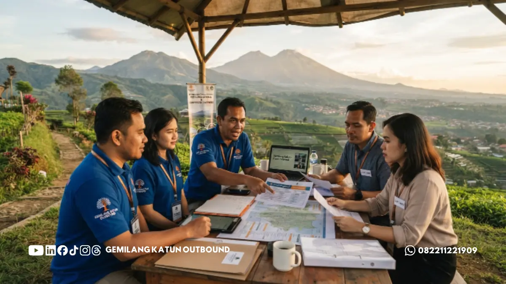

Daftar Isi
- Bagaimana Cara Mengecek Legalitas dan Rekam Jejak Vendor?
- Apa Saja Tanda Vendor Outbound yang Kurang Kredibel?
- Bagaimana Menilai Kualitas Fasilitator Vendor?
- Apa Saja Pertanyaan yang Perlu Diajukan Sebelum Booking Vendor?
- Mengapa Survei Lokasi Sebelum Hari Pelaksanaan Itu Penting?
- Tips Memaksimalkan Kerja Sama dengan Vendor Outbound
- Checklist Evaluasi Sebelum Memilih Vendor Outbound
Memilih vendor outbound Malang yang tepat memerlukan evaluasi terhadap legalitas usaha, rekam jejak kegiatan, kualitas fasilitator, dan kesesuaian program dengan tujuan perusahaan sebelum melakukan pemesanan.
- Legalitas dan rekam jejak vendor adalah dasar utama penilaian kredibilitas.
- Fasilitator berpengalaman menentukan kualitas pelaksanaan program di lapangan.
- Kesesuaian program dengan tujuan perusahaan lebih penting daripada sekadar variasi permainan.
- Survei lokasi dan konsultasi awal membantu menghindari kendala teknis saat pelaksanaan.
- Transparansi biaya menjadi indikator profesionalisme vendor.
Bagaimana Cara Mengecek Legalitas dan Rekam Jejak Vendor?
Cara mengecek legalitas dan rekam jejak vendor outbound adalah dengan meminta informasi izin usaha, melihat portofolio kegiatan sebelumnya, serta menghubungi klien lama sebagai referensi.
Vendor yang beroperasi secara resmi umumnya memiliki identitas usaha yang jelas, baik berupa badan usaha maupun perizinan operasional di bidang jasa event dan pariwisata.
Selain itu, dokumentasi kegiatan sebelumnya, seperti foto atau video pelaksanaan program, dapat menjadi indikator awal mengenai skala dan kualitas layanan yang pernah diberikan.
Menghubungi klien sebelumnya, apabila memungkinkan, juga membantu memberikan gambaran nyata mengenai pengalaman bekerja sama dengan vendor tersebut, termasuk soal ketepatan waktu, komunikasi, dan penanganan situasi tak terduga di lapangan.
Berdasarkan pengalaman umum di industri jasa event outdoor, vendor yang telah beroperasi dalam jangka waktu yang cukup lama umumnya memiliki sistem kerja yang lebih terstruktur dibandingkan vendor yang baru merintis usaha, meskipun hal ini tidak selalu berlaku mutlak pada setiap kasus.
Apa Saja Tanda Vendor Outbound yang Kurang Kredibel?
Tanda vendor outbound yang kurang kredibel antara lain sulit dihubungi untuk konsultasi awal, tidak transparan mengenai rincian biaya, dan tidak memiliki dokumentasi kegiatan sebelumnya yang dapat diverifikasi.
Vendor yang kurang kredibel biasanya langsung menawarkan paket harga tanpa menanyakan tujuan, jumlah peserta, atau karakteristik kelompok terlebih dahulu.
Pendekatan semacam ini menunjukkan bahwa program yang ditawarkan bersifat generik dan belum tentu sesuai dengan kebutuhan spesifik klien.
Selain itu, ketiadaan penjelasan mengenai prosedur keselamatan untuk aktivitas berisiko, seperti permainan ketinggian atau aktivitas air, juga menjadi sinyal peringatan yang perlu diperhatikan calon klien sebelum memutuskan bekerja sama.

Bagaimana Menilai Kualitas Fasilitator Vendor?
Kualitas fasilitator vendor dapat dinilai dari kemampuan mereka menjelaskan alur program secara jelas, pengalaman menangani kelompok dengan berbagai karakter, serta kemampuan membaca dinamika tim selama kegiatan berlangsung.
Fasilitator yang berpengalaman umumnya mampu menyesuaikan intensitas permainan sesuai kondisi peserta, misalnya menurunkan tingkat kesulitan apabila kelompok terlihat kelelahan, atau menambahkan tantangan apabila kelompok terlihat sangat kompetitif.
Kemampuan adaptif semacam ini sulit dinilai hanya dari brosur atau proposal, sehingga sesi perkenalan atau wawancara singkat dengan fasilitator sebelum hari pelaksanaan dapat membantu memberikan gambaran lebih jelas.
Apa Saja Pertanyaan yang Perlu Diajukan Sebelum Booking Vendor?
Pertanyaan yang perlu diajukan sebelum booking vendor outbound antara lain mengenai pengalaman menangani kelompok sejenis, prosedur keselamatan yang diterapkan, serta rincian komponen biaya dalam paket yang ditawarkan.
Selain tiga pertanyaan utama tersebut, calon klien juga sebaiknya menanyakan mengenai rencana cadangan apabila terjadi kendala cuaca, terutama untuk kegiatan yang mengandalkan lokasi outdoor.
Menanyakan jumlah fasilitator yang akan bertugas dibandingkan jumlah peserta juga penting, karena rasio fasilitator terhadap peserta memengaruhi kualitas pengawasan selama kegiatan berlangsung.
Terakhir, menanyakan kebijakan pembatalan atau perubahan jadwal juga perlu dilakukan sejak awal, agar tidak menimbulkan kesalahpahaman apabila terjadi perubahan rencana dari pihak perusahaan.
Mengapa Survei Lokasi Sebelum Hari Pelaksanaan Itu Penting?
Survei lokasi sebelum hari pelaksanaan penting dilakukan untuk memastikan kesesuaian fasilitas, akses jalan, dan kapasitas lokasi dengan jumlah peserta yang direncanakan.
Survei ini terutama relevan untuk kelompok dengan jumlah peserta besar, karena beberapa lokasi outbound memiliki keterbatasan kapasitas ruang berkumpul, area parkir, atau fasilitas pendukung seperti toilet dan tempat istirahat.
Selain itu, survei lokasi juga membantu tim perencana perusahaan untuk menyesuaikan jenis permainan dengan kondisi medan yang tersedia, sehingga program dapat berjalan sesuai rencana tanpa kendala teknis yang tidak terduga di hari pelaksanaan.
Tips Memaksimalkan Kerja Sama dengan Vendor Outbound
Memilih vendor outbound Malang yang tepat bukan sekadar membandingkan harga, melainkan menilai kredibilitas, kualitas fasilitator, dan kesesuaian program dengan tujuan perusahaan secara menyeluruh.
Lakukan konsultasi awal, ajukan pertanyaan penting, dan bila memungkinkan lakukan survei lokasi sebelum memutuskan bekerja sama dengan vendor tertentu.
Bangun komunikasi terbuka dengan pihak vendor terkait ekspektasi pimpinan manajemen, riwayat kesehatan peserta khusus, serta target nilai pembelajaran yang ingin dicapai setelah kegiatan usai.
Checklist Evaluasi Sebelum Memilih Vendor Outbound
| Tahap Evaluasi | Hal yang Perlu Dicek | Status Kesiapan |
|---|---|---|
| 1. Legalitas & Profil | Kelengkapan izin usaha, alamat kantor resmi, dan portofolio klien terdahulu | Wajib Ada |
| 2. Konsultasi Konsep | Vendor responsif dan menawarkan program sesuai tujuan spesifik tim | Sangat Penting |
| 3. Rasio & Fasilitator | Rasio fasilitator memadai (ideal 1:10-15 peserta) dan fasilitator kompeten | Sangat Penting |
| 4. Standar Keselamatan | Tersedia SOP mitigasi risiko, peralatan berstandar, serta perlengkapan P3K | Kritikal |
| 5. Transparansi Biaya | Invoice/proposal memuat rincian venue, logistik, konsumsi, dan PPN jika ada | Penting |
| 6. Survei & Contingency Plan | Pengecekan medan venue dan kesiapan rencana alternatif saat hujan | Direkomendasikan |
Konsultasikan Kebutuhan Outbound Anda Sekarang
Dapatkan saran program dan penawaran transparan yang dirancang khusus untuk tim perusahaan Anda.
Booking & Tanya Paket via WhatsApp 0822-1122-1909